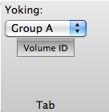

Tab Functions
The Tab section of
the Toolbar contains controls for functions that are active across
Viewing Tabs.
Tab Functions are not active in Chart View.
- Yoking
allows the user to define groups of tabs or windows that will
have linked rotation, panning, and zooming.
- Yoking Groups are defined between Surface,
Montage, and All Views OR
between Volume and All views (yoking is not
applied between surfaces and volumes).
- Surfaces are yoked so that the
corresponding lateral or medial contralateral hemispheres
can be viewed at the same time (e.g. superior temporal gyrus
on the lateral surface can be viewed on the right and left
hemisphere simultaneously).
- Volume ID button is only
active/visable in Volume or All Views. It turns on movement of
the volume slice/crosshairs displayed to the same plane as the
brainordinate selected in any of the non-Chart view tabs.
